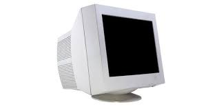

Display Devices
A display device, such as a monitor, is an output device used to display information generated by a computer.Monitor(also known as Visual Display Unit(VDU)) is an electronic unit that is served as an output device for your personal computer. It displays the information request by the user in the form of text and graphics images. A standard monitor consists of three parts: display unit, circuit, and case. The display unit may vary depending on the type of monitor used.
Now let's begin by learning about various display types.
Cathode-ray tube(CRT)

A CRT is a vacuum tube, which is mostly found in conventional computer monitors. It is similar to a picture tube seen in a television(TV) receiver. An electron gun, a device present in the CRT, shoots a beam of electrons on the backside of the monitor screen. CRTs frequently use three electron-emitting guns each for color image components, such as red, green, and blue. There is a coating of phosphors (special chemical dots) at the backside of the screen. The phosphors glow whenever electrons strike them and display an image on the screen.
One of the biggest disadvantages of CRT monitors is the size and weight of the tubes. The larger the size of the display screen, the higher is the weight. Another major drawback of using the CRT monitor is the power consumption and heat generation.
Liquid-crystal display(LCD)
LCD monitor
LCD refers to a device used for an electronic visual display that displays information on screen by using light modulation properties of liquid crystals. It was found that on passing the electronic current through a semi-crystalline liquid, the crystal united themselves with the current. The combination of the transistors with these liquid crystals and different patterns represent the numbers or letters. The LCD monitor is one of the most widely used flat-panel monitors. This LCD monitor is one of the most popular display devices as compared to the CRT monitors because the LCD monitor is thin in structure, consumes less power, and has high resolution. Because of these reasons, the LCD monitor is widely used in TVs, laptops, computers, and digital cameras.
LED
LED monitor
Currently, LED is one of the most expensive technologies used for display devices. It generates images with high brightness and color gamut. An electric current is passed through LEDs that make the LEDs emit light. A standard LED consumes up to 40% less power than a standard LCD. LED is an upgrade of LCD with the difference used for backlighting. Here, LEDs are used in place of cold cathode fluorescent lamps(CCFL), which are used in most LCD monitors.
Plasma
Plasma monitor
In plasma, the phosphors that create an image on the screen light up themselves, and they do not need any backlighting. Plasma displays use small cells containing electrically charged ionized gases or fluorescent lights(a gas-discharge lamp that usages electricity to excite mercury gas). The screen of the plasma monitor is made from glasses so that more light can reflect for enhanced display. Currently, plasma panels cannot be economically manufactured in screen sizes smaller than 32 inches.
Refresh Rate
OK, so this topic should be not in the hardware section but I am including it because everyone has this question that what is the refresh rate of a display screen.
What is the refresh rate?
Refresh rate refers to the rate of measuring the number of times in a second, an electron beam is responsible for redrawing screens in a CRT. The rate of refresh is measured in hertz(Hz) and is proportional directly to the effort required for keeping the screen lit. Refresh rates for CRT monitors include 60, 75, and 85 Hz. A higher refresh rate results in less flickering of the image on the screen. The refresh rate of less than 60 Hz results in image flickering. If your CRT monitor has a refresh rate of 75 Hz, then it means that the refresh rate cycles through all the pixels from top to bottom 75 times per second. Refresh rates are used in controlling flickers and reducing eye strains. If you have an LCD monitor, then you may not be able to adjust the refresh rate because LCDs do not illuminate phosphors. If a pixel changes before the next refresh, the monitor is unable to observe the change in that pixel. An example of using higher refresh rates is in gaming systems. You must ensure that the same refresh rate should be supported by both, graphics adapter as well by monitor. You cannot have a higher refresh rate and higher refresh rate and higher resolution simultaneously. You can change the refresh rate of a monitor in Windows 7 or Windows 10, but I will teach you in the tips and tricks section.